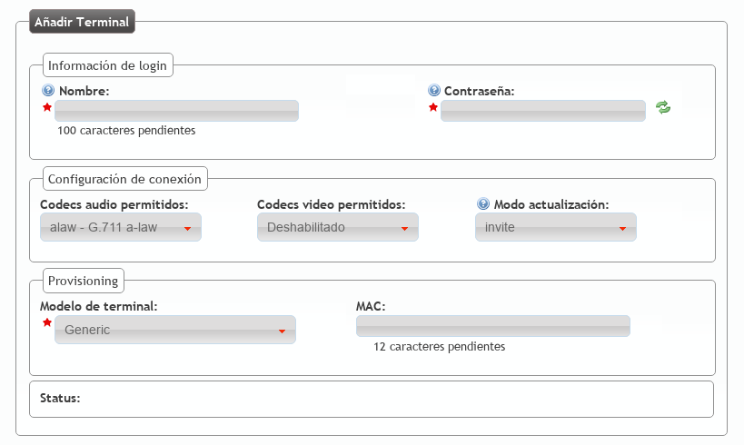

Terminales¶
La sección Configuración de empresa > Terminales permite dar de alta credenciales SIP que podrán ser utilizados por diversos dispositivos SIP para realizar y recibir llamadas de IvozProvider.
La mejor forma de entender la sección es crear uno nuevo y ver los campos que tenemos que cumplimentar:
- Nombre
Usuario que utilizará el terminal para presentarse ante IvozProvider y para realizar la fase de autenticación SIP.
- Contraseña
Contraseña que utilizará el terminal para responder a la fase de autenticación SIP. Utilizar el generador automático de contraseñas para cumplir los criterios de seguridad exigidos.
- Codecs rechazados/permitidos
Determina que codecs de audio y video serán empleados con el terminal.
- Modo de actualización
Indica si el terminal prefiere utilizar reINVITEs o UPDATEs para actualizar la sesión. La sección de ayuda indica qué terminales suelen requerir qué método. En caso de duda, utilizar invite.
- Modelo de terminal
Indica el tipo de provisión que tendrá que recibir este terminal concreto. En el apartado dedicado a la provisión de terminales se verá que existen unos modelos con provisión automática y se explicará todo en profundidad. En caso de no necesitar provisión, utilizar Generic.
- MAC
Campo necesario para modelos que utilizan el sistema de provisión de terminales de IvozProvider. Recoge la dirección física del adaptador de red del dispositivo SIP.
Nota
En la mayoría de dispositivos, siempre que no requieran provisión, bastará con rellenar el nombre y contraseña.
Consejo
Una vez dado de alta el Terminal, en la mayoría de dispositivos bastará con configurar nombre, contraseña y dominio SIP de la compañía para poder llamar.